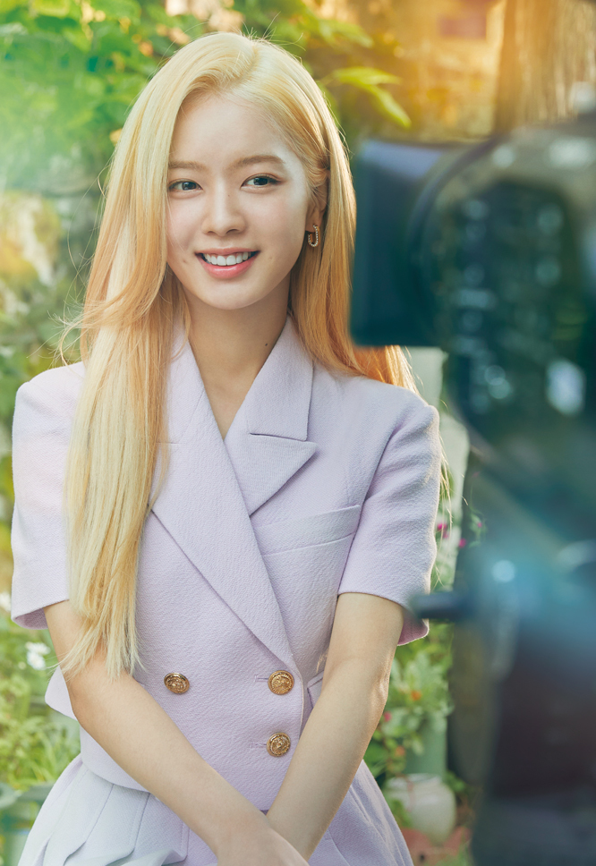

" 함께해서 더러웠고 다신 보지 말자!로 끝났어야 할 인연이 10년이 흘러 카메라 앞에 강제 소환 되어 펼쳐지는 청춘 다큐를 가장한 아찔한 로맨스 드라마 "
등장인물
최 웅, 29세 ㅣ "싫어하는 거요? 국연수요. 아니, 국영수요." "내가 그렇게 버리기 쉬운 거냐, 네가 가진 것 중에." 국연수, 29세 ㅣ "내가 버릴 수 있는 건 너 밖에 없어." "나는 제발 내가 감당할 수 있을 만큼만 가난했으면 좋겠어."
김지웅, 29세 ㅣ "아무래도 이번생은 내가 주인공이 아닌거 같으니까요."
 엔제이, 29세 ㅣ "사랑한다는 거 아니고 사귀자는 거 아니고 그냥 좋아만 한다구요."
 국연수, 29세 ㅣ "내가 버릴 수 있는 건 너 밖에 없어." "나는 제발 내가 감당할 수 있을 만큼만 가난했으면 좋겠어."
국연수, 29세 ㅣ "내가 버릴 수 있는 건 너 밖에 없어." "나는 제발 내가 감당할 수 있을 만큼만 가난했으면 좋겠어."